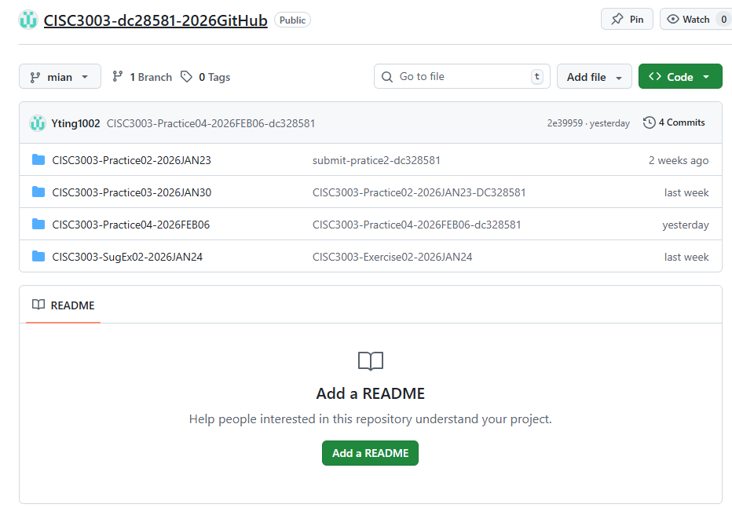

My Learning Log
Week 1: HTML Basic Structure
Learned semantic tags (header/nav/main) and image insertion.
Week 2: CSS Layout
Practiced Float layout and responsive design basics.
My Accomplishments
- Completed CISC3003 SugEx02 (single-page personal website)
- Wrote 3 technical blogs about web development
- Participated in 2 class group discussions about CSS layout

My Statement of Purpose
I aim to become a professional front-end developer who can create user-friendly, visually appealing web applications. I will continue to learn cutting-edge front-end technologies and apply them to solve real-world problems, while improving my collaboration and communication skills in team projects.